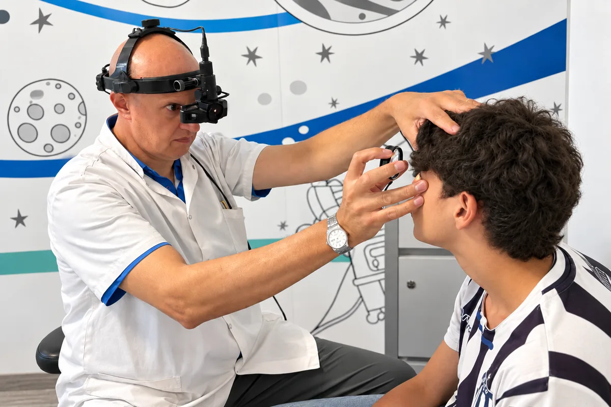

Especialidad
Oftalmología pediátrica y estrabismo
La visión se desarrolla en los primeros años. Lo que se detecta a tiempo, se trata mejor.
En pocas palabras
Qué es y qué tratamos
Los chicos no se quejan de ver mal: para ellos, su forma de ver es la normal. Por eso la oftalmología pediátrica se apoya en controles por edad —desde el recién nacido— y en profesionales entrenados para examinar a un niño que todavía no lee ni describe lo que ve. El estrabismo y el ojo vago son sus dos grandes temas: ambos tienen mejor pronóstico cuanto antes se abordan.



Preguntas frecuentes
Sobre oftalmología pediátrica y estrabismo
¿A qué edad es el primer control oftalmológico?
Al nacer. Después, a los seis meses, al año y luego una vez por año hasta los ocho años, aunque el niño no manifieste ningún problema.
¿Cómo se revisa a un bebé que no habla?
Con métodos que no requieren respuesta: el reflejo rojo, la forma en que fija y sigue objetos, el alineamiento de los ojos y el examen del fondo de ojo con gotas.
¿Qué es el ojo vago?
La ambliopía: un ojo que no desarrolló toda su visión porque el cerebro aprendió a usar el otro. Se trata en la infancia; después de cierta edad, la recuperación es mucho más difícil.
¿Cuándo consultar por estrabismo?
Ante la primera desviación que se note, salvo en los dos primeros meses de vida, donde puede ser normal una desviación intermitente. La consulta define si requiere seguimiento o tratamiento.
Turnos
Consultá con los especialistas en oftalmología pediátrica y estrabismo
Lunes a viernes de 7:30 a 19:30 en Bv. Chacabuco 879, Nueva Córdoba. Para urgencias, guardia las 24 horas.